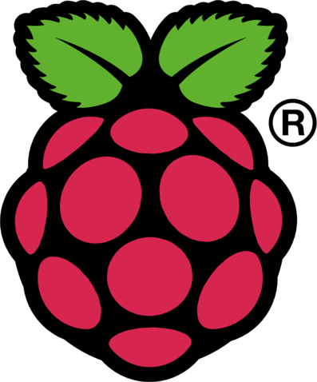
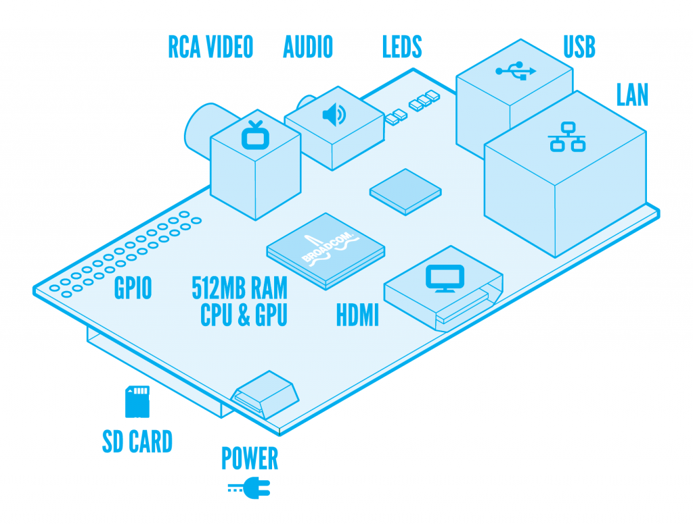
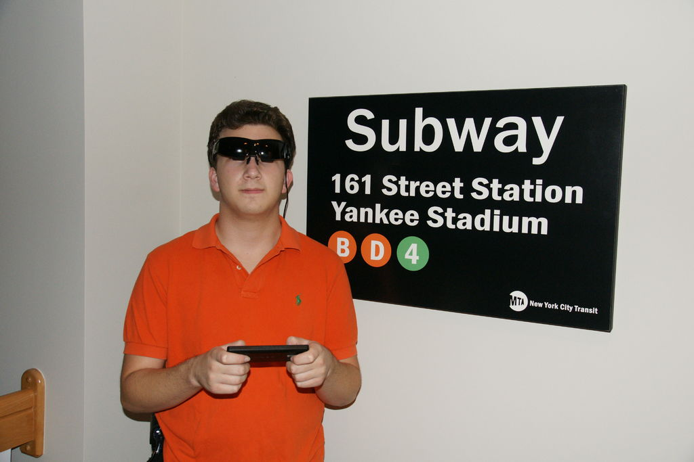
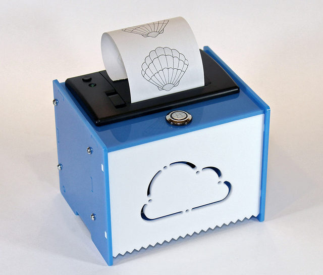
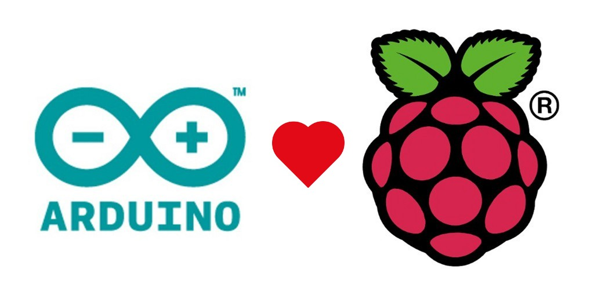

Un ordinateur pour moins de 40€!
- De la taille d'une carte de crédit
- Puissant comme un smartphone de moyenne gamme
- Complètement open source (matériel et logiciel)
- Géré par la fondation Raspberry Pi
- Destiné à l'apprentissage de l'informatique
Sous le capot

GPIOs
- General Purpose Input/Output
- Connecter capteurs, boutons, leds, moteurs, etc. au Raspberry Pi
- Les GPIOs peuvent communiquer avec le reste du Raspberry Pi
Du Raspberry Pi vers le Web
- Envoyer des données sur le web
- Mesures de capteurs, streaming audio/video, etc.
Du Web vers le Raspberry Pi
- Controller le Raspberry Pi à distance
- Actionneurs, moteurs, etc.
Et mixer les deux!
Téléphoner à sa cafetière
Connecter les années 50 au web
DIY Google Glasses

Controller un jouet depuis un iPhone (ou le web)
Imprimer le temps qu'il fait

Arduino vs. Raspberry Pi : le faux débat
- Pas de choix magique
- Choisir en fonction de ses besoins et contraintes
- Consommation électrique : ~0.5W pour Arduino, ~3.5W pour Raspberry Pi
- Rapidité de mise en route : quasi instantanée pour l'Arduino, ~30s pour Raspberry Pi
- Connexion au web plus simple avec Raspberry Pi
- Avez-vous vraiment besoin d'un OS? D'un GPU? ...
Groupe Raspberry Pi Nantes
Aller plus loin
Merci de votre attention!
